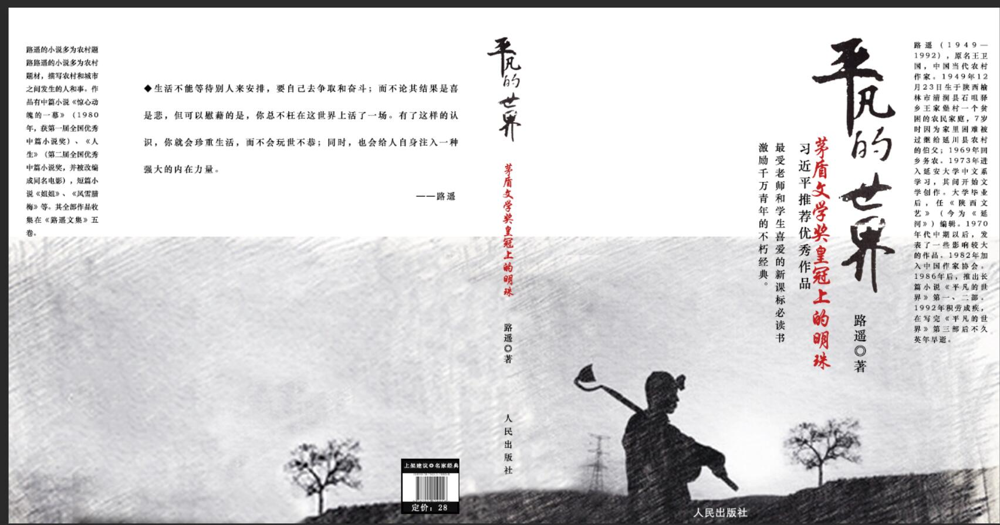

平凡的世界
内容摘要
送走秀莲以后，孙少安独自一人握着自行车把，在石圪节的公路上驻足凝思。此刻，天边一行大雁正嗷嗷叫着从对面的土山上空向南迁徙而去，那凄凉而又激越的叫声勾起了他对时光荏苒的无限感慨。冬天的脚步近了，而春天仿佛还在昨天——那时，他手里紧攥着润叶托人捎来的纸条，同样站在这个位置上，满心期待地看着南归的大雁划破蓝天，带来了春的消息。现在，同样的地点，同样的天空，却是另一番景象：大雁再次启程南飞，时间如同流水般悄无声息地逝去，生活却并没有因为季节更替而变得简单。这一年来，孙少安的生活发生了翻天覆地的变化。作为双水村的一家之主，他带领全家走出贫困，办起了砖窑，又经历了无数的挫折与困苦。秀莲，这个愿意与他共同承受风雨、无怨无悔的妻子，始终是他最坚实的后盾。尽管他们一同奋斗，但孙少安的心中始终无法抹去对润叶那份深深的遗憾和惋惜，那是他生命里最初的爱恋，也是被现实无情冲刷的美好记忆。周围的环境似乎也在诉说着世事变迁的故事。田野上的庄稼已经收割完毕，只剩下一茬茬稻草桩整齐排列在地头，大地显得格外沉寂。他知道，新的农忙季节还会再来，就像那些按照既定轨迹迁徙的大雁一样，无论遭遇何种艰难险阻，人们都会继续在这片土地上耕耘播种，追求属于他们的平凡世界中的幸福生活。
感悟分享
《平凡的世界》让我深刻体会到了生活的酸甜苦辣，让我明白了坚持和信念的重要性。在这个平凡的世界里，每个人都有自己的梦想，每个人都在为了梦想而奋斗。无论前路如何艰难，我们都不应该放弃希望，我们都应该坚持不懈地追逐自己的梦想。感谢路遥创作了这样一部伟大的作品，让我在阅读中汲取到了人生的智慧，收获到了前行的勇气。